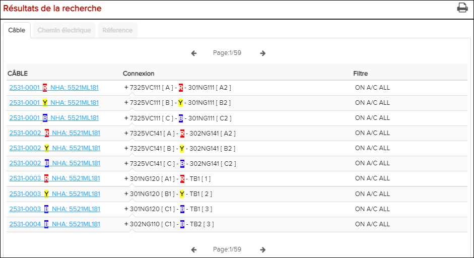
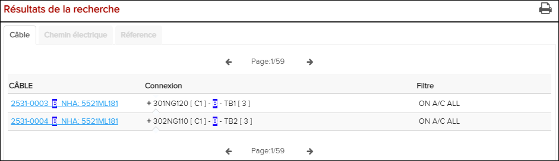
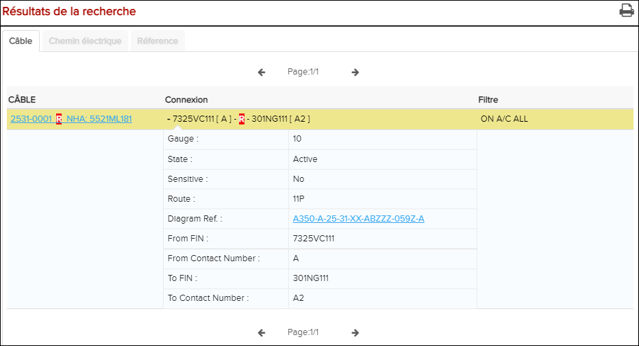
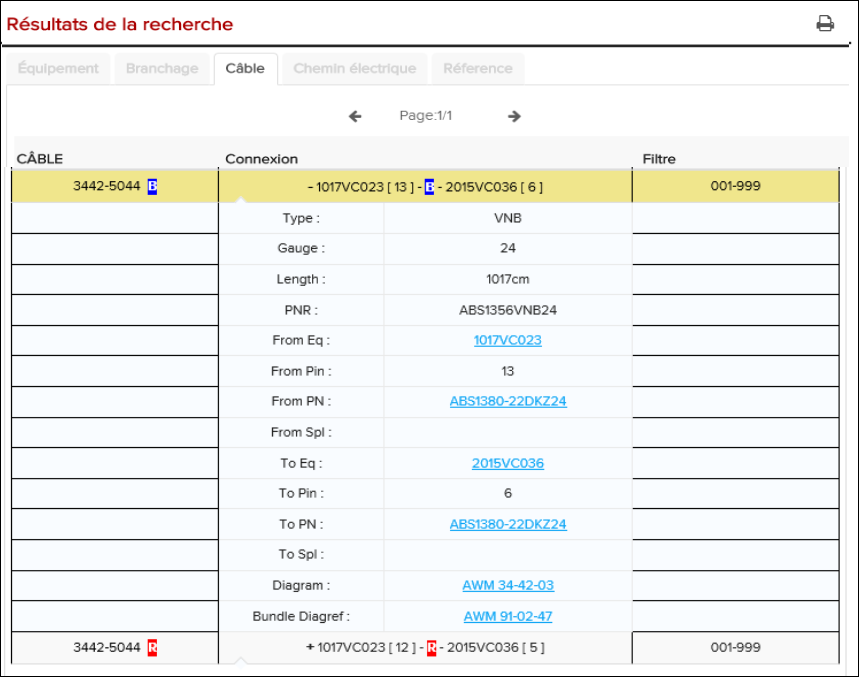
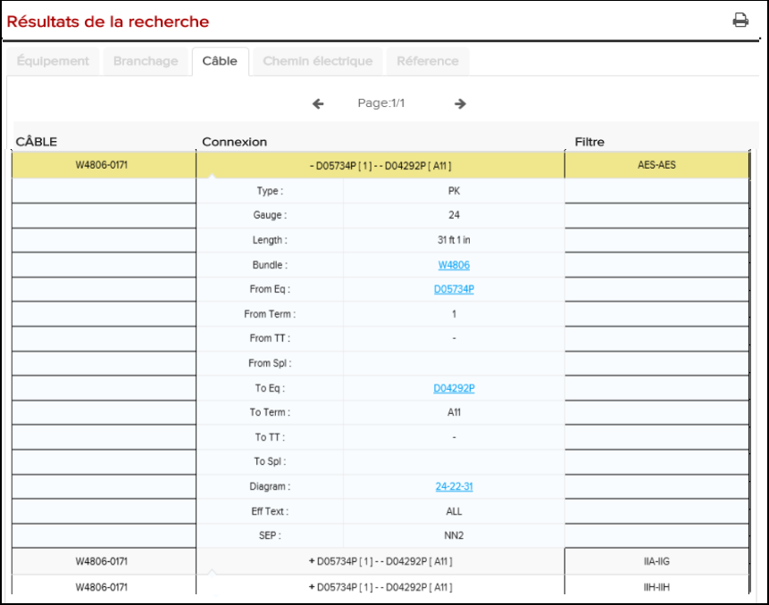

-
Effectuez une recherche de câblage comme décrit dans Rechercher les listes de câblages.
Les résultats de la recherche sont affichés dans l'onglet câblage sous les champs de recherche.
À partir de l'espace Résultats de la recherche, cliquez sur l'icône
 Imprimer les résultats de la recherche pour imprimer
les résultats de la recherche au format PDF.
Imprimer les résultats de la recherche pour imprimer
les résultats de la recherche au format PDF.
Résultat de recherche de câblage
Remarque : Si les données de l'A350 contiennent un assemblage NHA (Next Higher Assembly) pour un numéro de fil, les résultats de la recherche indiquent NHA à côté du numéro de fil, par exemple:
-
Cliquez sur le résultat de la recherche pour accéder à plus d'informations sur
l'entrée.
La ligne est mise en surbrillance et agrandie afin que vous puissiez voir des informations détaillées sur l'entrée.

Résultat de recherche de fils étendu

Résultat de recherche de fils étendu (exemple d'Airbus)

Résultat de recherche de fils étendu (exemple Boeing)
Remarque : Les catégories d'informations disponibles sur la page de résultats de recherche varient en fonction du type de recherche.Remarque : Avec une entrée surlignée dans le résultat de la Recherche de câblage, vous pouvez ouvrir l'onglet Chemin électrique et déclencher une recherche de chemin électrique pour le câblage. Si un résultat pour une autre entrée est déjà présent dans l'onglet Chemin électrique, il vous sera demandé si vous voulez démarrer un nouveau chemin électrique avec l'entrée sélectionnée. Pour des instructions sur la navigation par recherche de chemin électrique, référer à Naviguer dans les résultats de recherche dans l'onglet Chemin électrique. -
Utilisez les résultats de la recherche dans l'onglet câblage selon vos
besoins.
Voir au tableau ci-dessous pour certains types d'informations affichées:
Tableau 1. Résultats de la recherche du câblage L'identifiant La description L'activité Câble Le numéro de câblage N/A Connexion EIN / FIN des composants connectés par le câblage Cliquez pour agrandir la ligne et de révéler plus d'informations. Ci-dessous sont les différentes propriétés de ce câblage. Le type d'informations disponibles dépend de la publication. Type Type de câblage. N/A Gauge Mesure de la taille du câblage. N/A Longueur Longueur du câblage. N/A Paquet Numéro de paquet Cliquez sur le lien pour ouvrir le paquet dans l'onglet cabllage. PNR Le numéro de pièce que vous souhaitez rechercher. N/A De l'Eq FIN / EIN du composant auquel le câblage se connecte à l'origine du signal électrique. Cliquez sur le lien pour voir le composant dans l'onglet Equipement. Pour Pin LePin de l'élément que le câblage se connecte à l'origine du signal électrique. N/A De PN PN d'un contact électrique du composant auquel le fil se connecte à l'origine du signal électrique. Sélectionnez le lien PNR pour voir la référence au publication AIPC / ESPM. S'il existe plusieurs références, elles seront affichées dans l'onglet Référence. S'il n'y en a qu'un, il ouvrira directement le document associé. De Contact PN PN d'un contact électrique du composant auquel le câblage se connecte à l'origine du signal électrique. Sélectionnez le lien PNR pour voir la référence au publication AIPC / ESPM. S'il y a plusieurs références, elles seront affichées dans l'onglet Référence. S'il n'y en a qu'un, il ouvrira directement le document correspondant. Du terme Le numéro de terminal identifie le type de l'identifiant du contact à chaque extrémité du fil, caractères typiquement alphanumériques. N/A De TT Si l'EIN est un bornier, ce type de Terminal serait présent si des données de valeur applicables sont fournies. Remarque : Il s'agit d'informations facultatives pour les données Boeing et il n'est pas applicable aux Données Airbus.N/A De Spl Vous permet de rechercher des FIN ou des EIN dans les listes d'épissures. Remarque : La recherche d'épissure n'est pas disponible pour les publications Airbus.N/A À Eq FIN / EIN du composant auquel le fil se connecte à l'origine du signal électrique. Cliquez sur le lien pour voir le composant dans l'onglet Équipement. À Pin Le composant du pin auquel le fil se connecte à l'endroit où le signal électrique est envoyé. N/A À PN PN d'un contact électrique du composant auquel le fil se connecte où le signal électrique est envoyé. Sélectionnez le lien PNR pour voir la référence au publlication AIPC / ESPM. S'il existe plusieurs références, elles seront affichées dans l'onglet Référence. S'il n'y en a qu'un, il ouvrira directement le document associé. À Terme Le numéro de borne identifie le type de l'identifiant de contact à chaque extrémité du fil, généralement des caractères alphanumériques. N/A À TT Si l'EIN est un bornier, ce type de terminal serait présent si des données de valeur applicables sont fournies. Remarque : Il s'agit d'informations facultatives pour les données Boeing et il n'est pas applicable aux Données Airbus.N/A À Spl Vous permet de rechercher des FIN ou des EIN dans les listes d'épissures. Remarque : La recherche d'épissure n'est pas disponible pour les publications Airbus.N/A Vers le côté installation Le côté installation détaille que les câbles Quadrax doivent être installés dans une direction spécifique et il montre ces détails. Remarque : côté installation n'est disponible que pour les publications Airbus.N/A Pour contacter PN PN d'un contact électrique du composant auquel le fil câblage se connecte à l'endroit où le signal électrique est envoyé. Sélectionnez le lien PNR pour voir la référence au publication AIPC / ESPM. S'il y a plusieurs références, elles seront affichées dans l'onglet Référence. S'il n'y en a qu'un, il ouvrira directement le document correspondant. Schéma Schéma de câblage. Ouvre le diagramme de câblage sélectionné dans la fenêtre Graphique. Dans les diagrammes SVG, votre sélection peut également être mise en évidence pour la rendre plus facile à localiser. Paquet Diagref Référence du diagramme de faisceaux. Cliquez sur le lien pour ouvrir la publication du bundle dans l'onglet Cablage. Texte Eff Texte d'efficacité. C'est l'applicabilité / Informations sur l'efficacité mais affiche l'élément de texte EFF utilisé par Boeing en alternative ou en combinaison avec la gamme EFF. Généralement considéré comme AAA-ZZZ ou tous. N/A SB/COC Ref: Bulletin de service / référence de modification émanant du client Ce champ affiche les informations SB après l'édition d'un fil avec un SB. SEP Il s'agit du code de séparation des fils, il est attribué à un fil, pour lui donner une séparation fonctionnelle des autres fils / faisceaux. Remarque : SEP n'est disponible que pour les publications Boeing.N/A Filtre Informations d'applicabilité / d'efficacité N/A